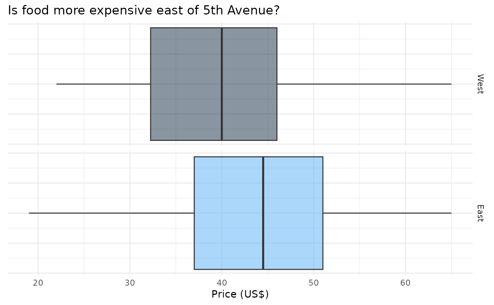

Zagat is a public survey where anyone can provide scores to a restaurant. The scores from the general public are then gathered to produce ratings. This dataset contains a list of 168 NYC restaurants and their Zagat Ratings.
Format
A data frame with 168 observations on the following 6 variables.
- restaurant
Name of the restaurant.
- price
Price of a mean for two, with drinks, in US $.
- food
Zagat rating for food.
- decor
Zagat rating for decor.
- service
Zagat rating for service.
- east
Indicator variable for location of the restaurant.
0= west of 5th Avenue,1= east of 5th Avenue
Details
For each category the scales are as follows:
0 - 9: poor to fair 10 - 15: fair to good 16 - 19: good to very good 20 - 25: very good to excellent 25 - 30: extraordinary to perfection
Examples
library(dplyr)
library(ggplot2)
location_labs <- c("West", "East")
names(location_labs) <- c(0, 1)
ggplot(nyc, mapping = aes(x = price, group = east, fill = east)) +
geom_boxplot(alpha = 0.5) +
facet_grid(east ~ ., labeller = labeller(east = location_labs)) +
labs(
title = "Is food more expensive east of 5th Avenue?",
x = "Price (US$)"
) +
guides(fill = "none") +
theme_minimal() +
theme(axis.text.y = element_blank())
